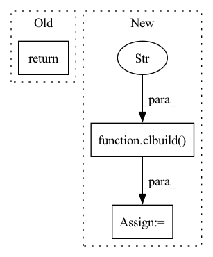

Pattern ID :9167

Before Change
@staticmethod
def backward(ctx, grad_output):
return grad_output
register("logsoftmax", LogSoftmax, gpu=True)
After Change
output, = ctx.saved_tensors
grad_input = buffer_like(ctx, grad_output)
prg = clbuild(ctx.cl_ctx,
__kernel void lsmsub2(
__global const float *grad_output, __global const float *output, int sz, __global float *grad_input)
{
int gid = get_global_id(0);
int gidsz = gid*sz;
int gid2 = get_global_id(1);
// TODO: this is repeated in many kernels
float acc = 0.0;
for (int x = 0; x < sz; x++) {
acc += grad_output[gidsz + x];
}
grad_input[gidsz + gid2] = grad_output[gidsz + gid2] - exp(output[gidsz + gid2]) * acc;
}
)
prg.lsmsub2(ctx.cl_queue, [grad_output.shape[0], grad_output.shape[1]], None,
grad_output, output, np.int32(grad_output.shape[1]), grad_input)
return grad_input
In pattern: SUPERPATTERN
Frequency: 3
Non-data size: 3
Instances
Fragment ID: 33263611
Project Name: geohot/tinygrad
Commit Name: 9332fe19893ccd0b35d08cb0bafd48f2de03b0ac
Time: 2020-11-07
Author: geohot@gmail.com
File Name: tinygrad/opsgpu.py
M Class Name: LogSoftmax
N Class Name: LogSoftmax
M Method Name: backward(2)
N Method Name: backward(2)
M Parent Class: Function
N Parent Class: Function
M File Name: tinygrad/opsgpu.py
N File Name: tinygrad/opsgpu.py
M Start Line: 229
M End Line: 229
N Start Line: 259
N End Line: 282
'>
Before Change
class LogSoftmax(Function):
@staticmethod
def forward(ctx, input):
return input
@staticmethod
def backward(ctx, grad_output):
After Change
@staticmethod
def forward(ctx, input):
lsum = buffer_new(ctx, (input.shape[0],))
prg = clbuild(ctx.cl_ctx,
__kernel void logsoftmax(
__global const float *a_g, int sz, __global float *res_g)
{
int gid = get_global_id(0);
int gidsz = gid*sz;
// TODO: stability with max
float out = 0.0;
for (int x = 0; x < sz; x++) {
out += exp(a_g[gidsz+x]);
}
res_g[gid] = log(out);
}
)
prg.logsoftmax(ctx.cl_queue, [input.shape[0]], None, input, np.int32(input.shape[1]), lsum)
output = buffer_like(ctx, input)
prg = clbuild(ctx.cl_ctx,
'>
Fragment ID: 33263610
Project Name: geohot/tinygrad
Commit Name: 9332fe19893ccd0b35d08cb0bafd48f2de03b0ac
Time: 2020-11-07
Author: geohot@gmail.com
File Name: tinygrad/opsgpu.py
M Class Name: LogSoftmax
N Class Name: LogSoftmax
M Method Name: forward(2)
N Method Name: forward(2)
M Parent Class: Function
N Parent Class: Function
M File Name: tinygrad/opsgpu.py
N File Name: tinygrad/opsgpu.py
M Start Line: 225
M End Line: 225
N Start Line: 225
N End Line: 255
'>
Before Change
@staticmethod
def backward(ctx, grad_output):
input, = ctx.saved_tensors
return binary_op(ctx, "res_g[gid] = b_g[0];", input, grad_output) // Quick hack for fill
register("sum", Sum, gpu=True)
class Dot(Function):
After Change
input, = ctx.saved_tensors
ret = buffer_like(ctx, input)
prg = clbuild(ctx.cl_ctx,
__kernel void fill(
__global const float *a_g, __global float *res_g)
{
int gid = get_global_id(0);
res_g[gid] = a_g[0];
}
)
prg.fill(ctx.cl_queue, [np.prod(ret.shape)], None, grad_output, ret)
return ret
register("sum", Sum, gpu=True)
'>
Fragment ID: 33263612
Project Name: geohot/tinygrad
Commit Name: 19c295031017c7ddddde9558c7d582543eb24d51
Time: 2020-11-07
Author: geohot@gmail.com
File Name: tinygrad/opsgpu.py
M Class Name: Sum
N Class Name: Sum
M Method Name: backward(2)
N Method Name: backward(2)
M Parent Class: Function
N Parent Class: Function
M File Name: tinygrad/opsgpu.py
N File Name: tinygrad/opsgpu.py
M Start Line: 135
M End Line: 135
N Start Line: 130
N End Line: 141